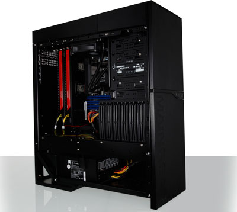
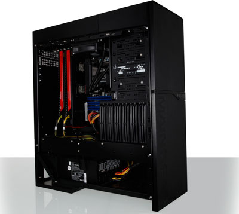

The Tech Bit
Reviews & First Impressions
 Reviews:
We are a new technology website that is focused on making technolgy as enjoyable as it
can possibly be to anyone who visits The Tech Bit. We try our best to go in depth in all of our
reviews yet we have the system simplified to where if you are in a hurry you can simply look over the
pros, cons, and bottom line of the review.
Reviews:
We are a new technology website that is focused on making technolgy as enjoyable as it
can possibly be to anyone who visits The Tech Bit. We try our best to go in depth in all of our
reviews yet we have the system simplified to where if you are in a hurry you can simply look over the
pros, cons, and bottom line of the review.
News:
Even though we can't stay updated with the latest news due to school and age.
we try our best to keep anyone who views the page updated with the latest and greatest in technology.
You can expect unbiased updates, livestreamed event, and the occasional rant.
Tutorials:
As for tutorials once we are situated expect a variaety of tutorials. Atleast one a week with
tutorials you guys ask for. We will try our best to find a format that is sleek and simple. Even
though simplicty is our goal we are trying to find a mx that fits skil levels of all ranges. So
expect multiple types of tutorials for all of the subjects we cover.
 About Us:
At The Tech Bit we think that you should know that we arent in fact robots or mindless zombies.
So I inroduce myself I will refer to myself I am a programmer fluent in HTML and
Objective C. I also know a few things about computer hardware. Than we have my awesome friend
who is a programmer fluent in C++. He also knows quite a bit about Apple although we
aren't biased to any brand we do have preferences.
About Us:
At The Tech Bit we think that you should know that we arent in fact robots or mindless zombies.
So I inroduce myself I will refer to myself I am a programmer fluent in HTML and
Objective C. I also know a few things about computer hardware. Than we have my awesome friend
who is a programmer fluent in C++. He also knows quite a bit about Apple although we
aren't biased to any brand we do have preferences.
Sources:
At Tech Bit we believe is original content but in all honesty he can't cover everything. Here are
some sources that we feel we will be referring back to now and again. These are also websites that
we strive to one day be like!
Engagdet
BGR
Techno Buffalo
 
